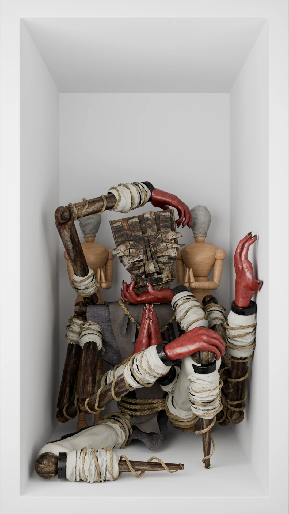
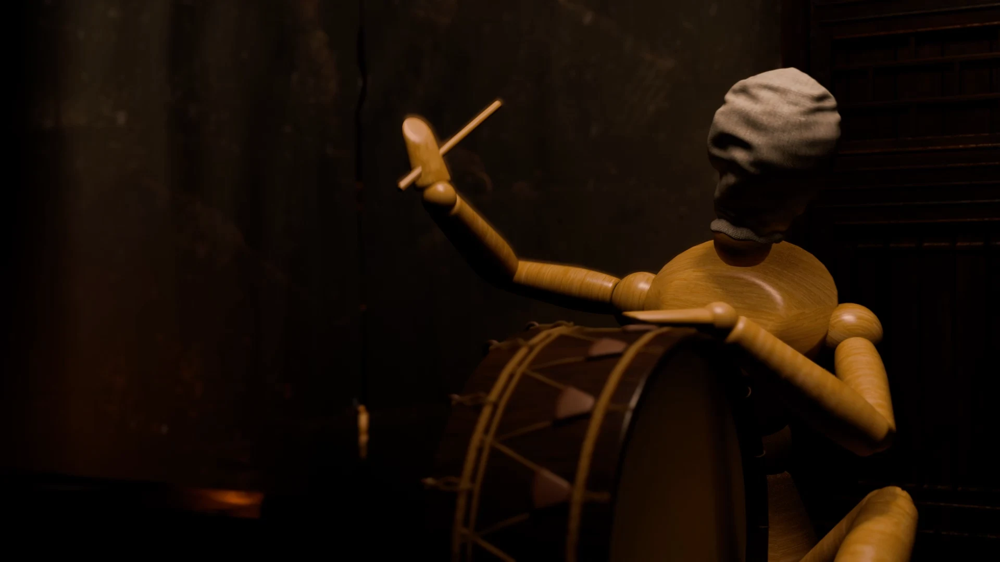
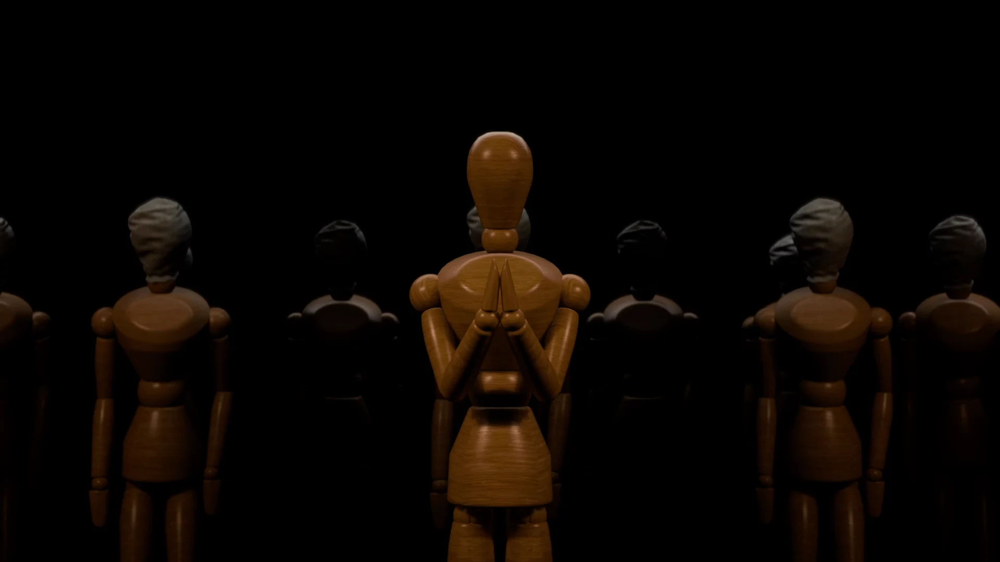
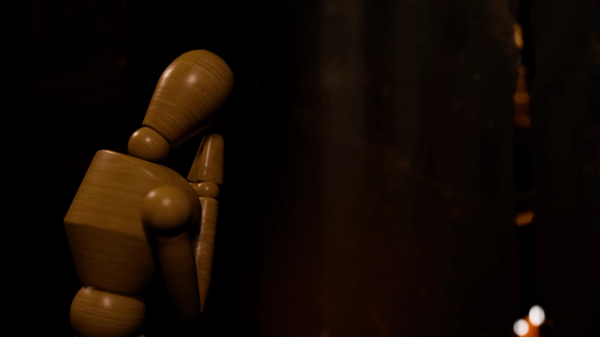
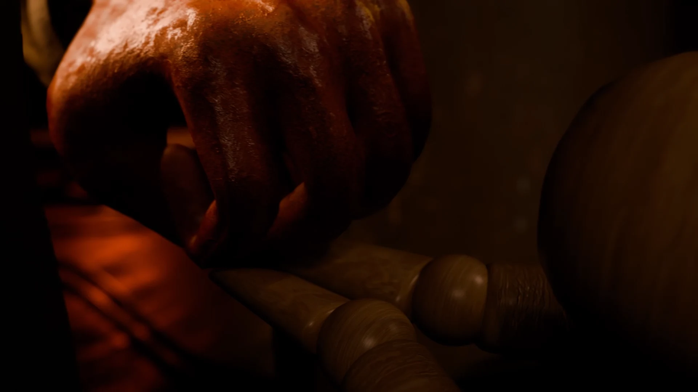
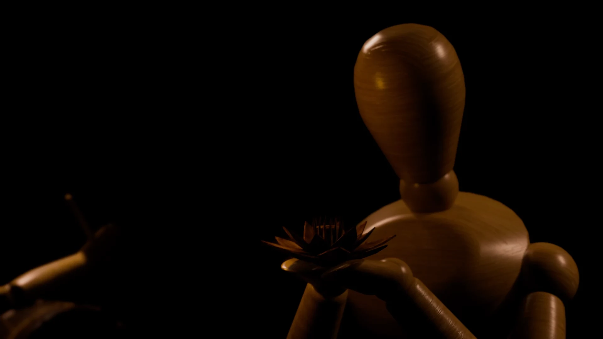
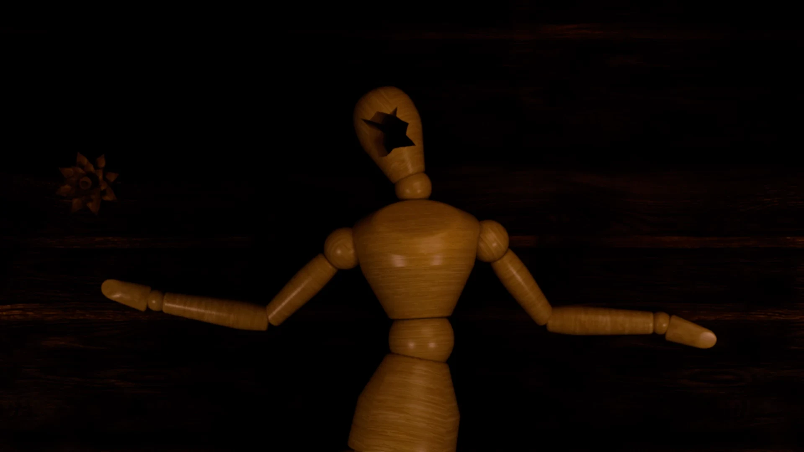
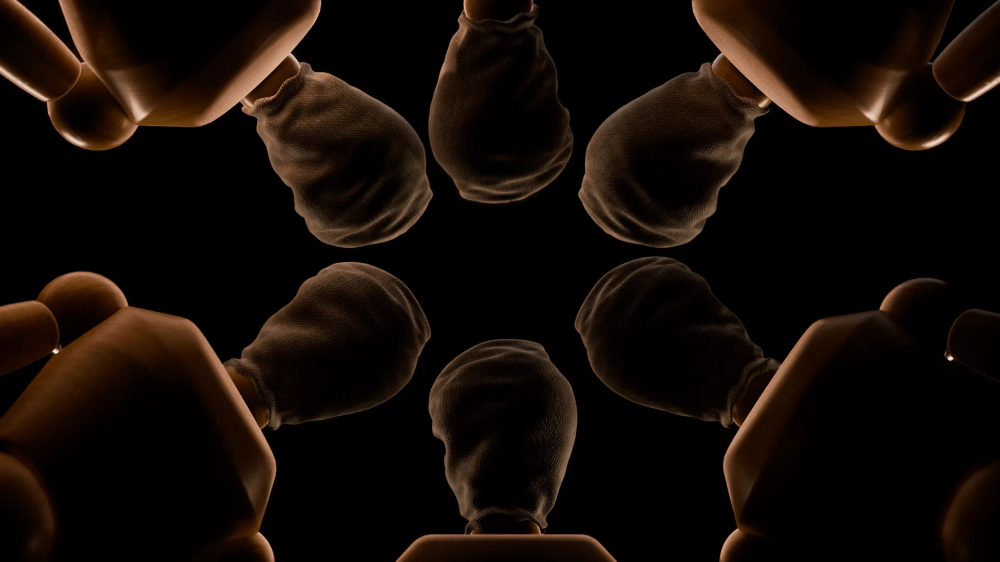
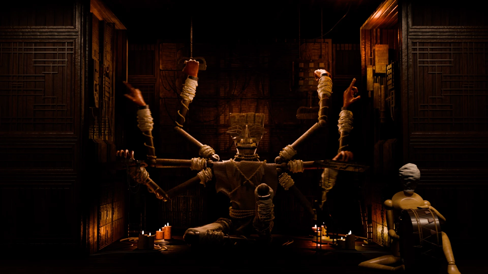

-puppet-
검색 / Search
2025 / Single-channel video, color, sound / 1920 x 1080 (px), 01’ 59”
2025 / Single-channel video, color, sound / 1920 x 1080 (px), 01’ 59”
검색(2025)은 AI에 의존하는 현재의 인간 모습을 다루는 작업이다.
예전에는 인터넷에 존재하는 무분별한 정보를 인간이 직접 판단하고 선별해야 한다는 이야기가 많았고,
나 또한 그렇게 배워왔다. 그러나 지금 우리는 AI에게 질문을 던지고,
그것이 사실인지 아닌지조차 모른 채 그대로 과제로 제출하거나, 무비판적으로 사람들에게 퍼나르고 있다.
인간은 이제 AI로부터 더 유의미하고 정교한 답을 얻기 위해 ‘좋은 프롬프트’를 찾고,
단순한 계산부터 복잡한 사고까지 의존한다.
이 모습은 마치 과거 신을 숭배하던 태도와 닮아 있다.
결국 우리는 새로운 ‘권위’로서 AI를 믿고, 그것을 경배하는 존재가 되어가고 있다.
이러한 현상을 꼭두각시 인형들이 거대한 존재를 모시는 의식으로 비유하여 작품을 제작했다.
인형들은 질문과 응답에 따라 움직이며,
스스로 사고하는 듯 보이지만 실상은 ‘위에서 내려오는 답변’을 받아 흉내 내는 것뿐이다.
나는 이 장면을 통해 지식과 권위, 믿음의 구조가 AI 시대에 어떻게 재편되고 있는지를 드러내고자 했다.
Search (2025) deals with the way people today rely on AI.
In the past, there was a strong emphasis on the idea that humans must carefully judge and filter the vast and chaotic information on the internet. That was how I was taught as well.
But now, in the age of AI, people ask questions to AI and submit its answers as assignments, or share them with others, without even knowing if those answers are true or not.
Humans are now focused on finding the “right prompts” to coax more meaningful and useful responses from AI. They increasingly rely on AI for everything from the simplest tasks to the most complex decisions.
To me, this behavior resembles the way humans once worshipped gods.
Inspired by this resemblance, I created a work in which puppet-like figures worship and serve AI as if it were a divine entity.








←